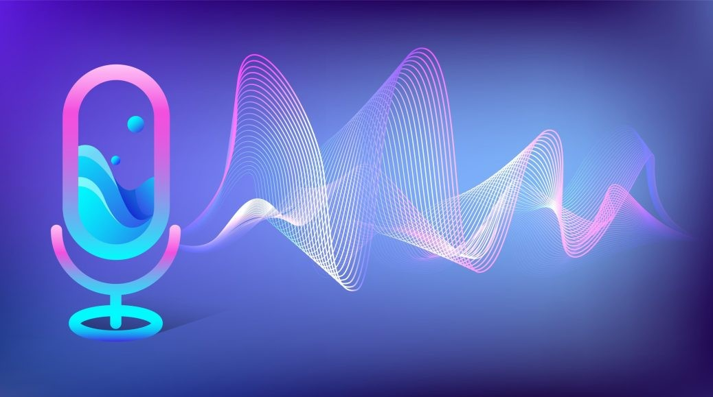

Archivamos
Tu voz

¿
qué hacemos
?
Graba tu voz
Los usuarios pueden grabar su voz leyendo textos proporcionados por nosotros.

IA personalizada
Utilizamos inteligencia artificial para transformar esas grabaciones en un modelo de voz personalizado, ¡creando un bot que suena como tú!

Recolección de voces
Almacenamos las voces grabadas para tener una base de datos con voces argentinas que permita desarrollar tecnologías con IA en nuestro país.
archivo de voces
Toda la tecnología desarrollada en ArchiVoz se base en el entrenamiento de datos con algoritmos de Inteligencia Artificial, para eso es necesitamos donaciones de voces que nos permitan seguir investigando y mejorando en las diferentes tecnologías que se usan en el proyecto. Para facilitar la donación de voz, creamos un asistente de grabación de voz, mirá el video para entender en detalle como funciona.
text-to-speech
Nuestro modelo de Text-to-speech, permite procesar texto y convertirlo en audio con el contenido hablado del texto ingresado. En la iteración actual del proyecto solo se puede probar los modelos que entrenamos nosotros, el objetivo es que en un futuro los usuarios puedan probar como funciona el algoritmo de clonación de voz con su propia voz en base a las donaciones que realicen en el proyecto.
información


Este archivo está destinado a recopilar grabaciones de voces diversas.
Trabajamos con la voz como sonido que representa nuestra corporeidad, un modulo de nuestro sistema con el cual nos expresamos, nos relacionamos y tenemos la posibilidad de "resonar" en el entorno.
La idea surgio con el animo de aportar soluciones a personas laringectomizadas, pero hoy en día se propone invitar a distintas identidades a la investigación de su propia diccion.
Estas voces serán la materia prima de un proceso técnico que podría devenir en la sintesis de una voz artificial o voz expandida.